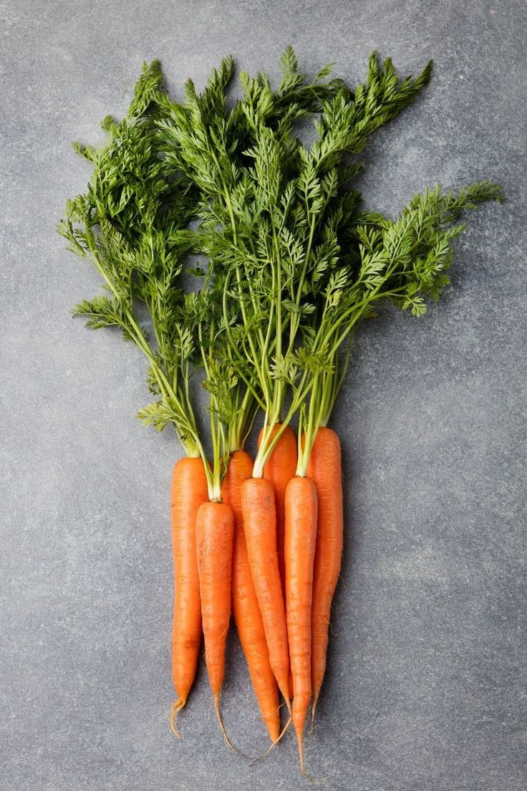

- nosotros
- procedimiento
- productos
- principal
-

- ZERO DOMMAGE
¿Quíeres saber el porque de cada componente?
Acá te lo explicaremos mejor y de una forma un poco más detallada.
El aloe vera nos brinda hidratación evitando así un cabello dañado, ayuda con el sebo que hay en nuestro cuero cabelludo evitando la grasa y la porosidad alta

La vitamina A, extraida directamente de la zanahoria nos ayuda con el crecimiento de nuestro cabello, nos brinda sedocidad, nos ayda a mejor manejo a la hora de peinaros y nos proteje de aquellos daños provocados por el sol.
El aceite de romero (hidrolato) es una fuente natural para combatir la caida de nuestro cabello, a su vez mejora la textura que hay en él evitando, que hay en el evitando que se rompa con facilidad, este aceite no dejara graso tu cabello

la proteina de trigo ayuda a fortalecer de raiz a puntas el cabello. No solo hace que se vea visualmente bien sino que tambien ayuda a que nuestros problemas se vayan desde la raíz. tambien elimina ese monstruoso problema que algunos tenemos ¡la caspa! ya que evita que nuestro cabello sea graso, sin perder el brillo narural de nuestro cabello